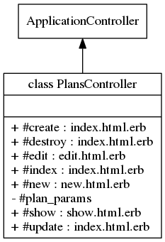

Class: PlansController
- Inherits:
-
ApplicationController
- Object
- ActionController::Base
- ApplicationController
- PlansController
- Defined in:
- app/controllers/plans_controller.rb
Overview
Handles the Plan model used by stripe for recurring
billing.
Only accessible to users with admin role. The routes
of this controller support localization but the web pages are not
translated as it is used only by admin. Corresponding tests:

Instance Method Summary collapse
-
#create ⇒ index.html.erb, new.html.erb
Save the new plan in the database.
-
#destroy ⇒ index.html.erb
Delete the plan from the database.
-
#edit ⇒ edit.html.erb
Displays the plan to be modified.
-
#index ⇒ index.html.erb
Displays plans list with bootstrap table sortable format.
-
#new ⇒ new.html.erb
Asks for new plan.
-
#plan_params ⇒ Object
private
Use callbacks to share common setup or constraints between actions.
-
#show ⇒ show.html.erb
Displays the plan.
-
#update ⇒ index.html.erb, edit.html.erb
Update the plan in the database.
Methods inherited from ApplicationController
#configure_permitted_parameters, #default_url_options, #set_locale
Instance Method Details
#create ⇒ index.html.erb, new.html.erb
Save the new plan in the database
44 45 46 47 48 49 50 |
# File 'app/controllers/plans_controller.rb', line 44 def create if @plan.save redirect_to @plan, notice: 'Plan was successfully created.' else render :new end end |
#destroy ⇒ index.html.erb
Delete the plan from the database
67 68 69 70 |
# File 'app/controllers/plans_controller.rb', line 67 def destroy @plan.destroy redirect_to plans_url, notice: 'Plan was successfully destroyed.' end |
#edit ⇒ edit.html.erb
Displays the plan to be modified
37 38 |
# File 'app/controllers/plans_controller.rb', line 37 def edit end |
#index ⇒ index.html.erb
Displays plans list with bootstrap table sortable format
22 23 24 |
# File 'app/controllers/plans_controller.rb', line 22 def index @plans = Plan.all end |
#new ⇒ new.html.erb
Asks for new plan
15 16 |
# File 'app/controllers/plans_controller.rb', line 15 def new end |
#plan_params ⇒ Object (private)
Use callbacks to share common setup or constraints between actions. Never trust parameters from the scary internet, only allow the white list through.
76 77 78 |
# File 'app/controllers/plans_controller.rb', line 76 def plan_params params.require(:plan).permit(:stripe_id, :name, :amount, :interval) end |
#show ⇒ show.html.erb
Displays the plan
30 31 |
# File 'app/controllers/plans_controller.rb', line 30 def show end |